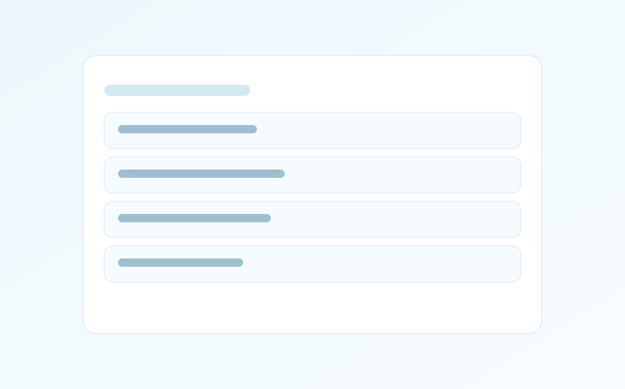

Desktop productivity, without friction
Focus faster with a tray-first workflow.
QuickFocus keeps your tasks close, keyboard-ready, and lightweight, so you can move projects without context switching overload.


Media Gallery
Add your files to /Images, /Gifs, and /Videos, then list them in media-manifest.json.
GIFs
Videos
Built for momentum
Keyboard-first productivity
Shortcuts, fast editing, and low-friction navigation keep your flow intact.
Lightweight and fast
Native desktop app tuned for responsiveness and predictable behavior.
Tray-first workflow
Stay available in your system tray with instant access when needed.
Projects, workspaces, reminders
Organize by context with focus tools like Pomodoro, tags, and alarms.
Free vs Pro
| Feature | Free | Pro |
|---|---|---|
| Projects | Up to 2 | Unlimited |
| Custom workspaces | Up to 2 | Unlimited |
| Google Drive sync | No | Yes |
| Tags | Basic | Custom tags and colors |
| Recurring tasks | No | Yes |
| Sound library | Limited | Full library |
| Alpha/Beta channels | No | Yes |
Install in minutes. Keep your focus for hours.
FAQ
How do updates work?
QuickFocus checks release manifests and guides you to install the latest stable build.
Is QuickFocus free?
Yes. The Free plan is available with core productivity features.
How do I unlock Pro?
Use the Upgrade to Pro link to activate a Pro license.
Does Pro require a subscription?
Current license options are managed in the official upgrade page.
Can I use my license on another computer?
License transfer and activation details are provided in the upgrade documentation.